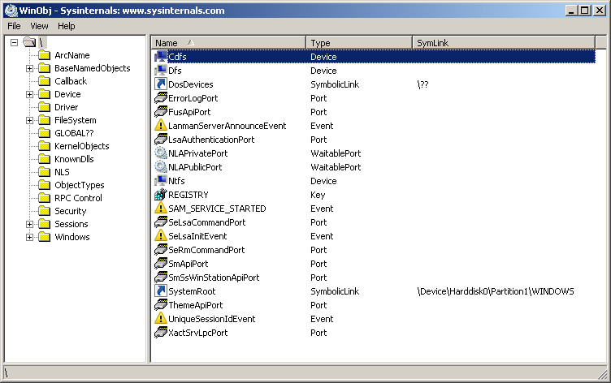

Steward
分享是一種喜悅、更是一種幸福
驅動程式 - Windows Driver Model (WDM) - NT Namespace("\\.\"、"\??\")轉置測試
NT Namespace

轉置支援表格整理如下：
| Namespace | 支援轉置 | 說明 |
|---|---|---|
| \\.\ | Yes | Win32 Device Namespace，指到NT Namespace的GLOBAL??資料夾，只能使用Win32 API相關的API呼叫，如：CreateFile() |
| \??\ | Yes | 指到NT Namespace根目錄，Windows XP不支援 |
| \??\GLOBALROOT\ | Yes | 指到NT Namespace根目錄，Windows XP不支援 |
| \\?\ | No | 指到NT Namespace根目錄，Windows APIs會把\\?\改成\??\ |
| \GLOBAL??\ | Yes | 指到NT Namespace的GLOBAL??資料夾 |
| \Device\ | Yes | 指到NT Namespace的Device資料夾 |
| \DosDevices\ | Yes | 指到NT Namespace的GLOBAL??資料夾 |
P.S. 轉置代表會把/字元改成\字元，Windows XP呼叫RtlDosPathNameToNtPathName_U(), Windows 7呼叫RtlDosPathNameToRelativeNtPathName()
測試程式
#include <windows.h>
#include <winternl.h>
#include <stdio.h>
#pragma comment(lib, "ntdll.lib")
typedef NTSTATUS(__stdcall *NT_OPEN_FILE)(PHANDLE FileHandle, ACCESS_MASK DesiredAccess, POBJECT_ATTRIBUTES ObjectAttributes, PIO_STATUS_BLOCK IoStatusBlock, ULONG ShareAccess, ULONG OpenOptions);
void WINAPI RtlInitUnicodeString(PUNICODE_STRING target, LPCWSTR source)
{
if ((target->Buffer = (LPWSTR)source))
{
target->Length = wcslen(source) * sizeof(WCHAR);
target->MaximumLength = target->Length + sizeof(WCHAR);
}
else
{
target->Length = target->MaximumLength = 0;
}
}
void DoNtOpenFile(wchar_t *name)
{
PVOID Info;
NT_OPEN_FILE NtOpenFileStruct;
HMODULE hModule = LoadLibrary("ntdll.dll");
NtOpenFileStruct = (NT_OPEN_FILE)GetProcAddress(hModule, "NtOpenFile");
if (NtOpenFileStruct != NULL)
{
UNICODE_STRING filename;
RtlInitUnicodeString(&filename, name);
OBJECT_ATTRIBUTES obj;
obj.Attributes = 0x40;
obj.ObjectName = &filename;
obj.Length = 0x18;
obj.RootDirectory = NULL;
obj.SecurityDescriptor = NULL;
obj.SecurityQualityOfService = NULL;
IO_STATUS_BLOCK iostatusblock;
HANDLE hFile = NULL;
NTSTATUS stat = NtOpenFileStruct(&hFile, 0x100001, &obj, &iostatusblock, 7, 0x20);
printf("NtOpenFileStruct(%S): (status:0x%x)\n", name, stat);
if (stat == 0)
{
CloseHandle(hFile);
}
}
}
void DoCreateFile(char *name)
{
HANDLE hFile = CreateFile(name, MAXIMUM_ALLOWED, FILE_SHARE_READ | FILE_SHARE_WRITE, NULL, OPEN_EXISTING, 0, NULL);
printf("CreateFile(%s): (handle:0x%x, err:0x%x)\n", name, hFile, GetLastError());
if (hFile != (HANDLE)-1)
{
CloseHandle(hFile);
}
}
int __cdecl main(int argc, char *argv[])
{
// device namespace
DoCreateFile("\\\\.\\ndis");
DoCreateFile("\\??\\ndis");
DoCreateFile("\\??\\GLOBALROOT\\ndis");
DoCreateFile("\\\\?\\ndis");
DoCreateFile("\\GLOBAL??\\ndis");
DoCreateFile("\\Device\\ndis");
DoCreateFile("\\DosDevices\\ndis");
DoCreateFile("ndis");
printf("\n");
DoNtOpenFile(L"\\\\.\\ndis");
DoNtOpenFile(L"\\??\\ndis");
DoNtOpenFile(L"\\??\\GLOBALROOT\\ndis");
DoNtOpenFile(L"\\\\?\\ndis");
DoNtOpenFile(L"\\GLOBAL??\\ndis");
DoNtOpenFile(L"\\Device\\ndis");
DoNtOpenFile(L"\\DosDevices\\ndis");
DoNtOpenFile(L"ndis");
printf("\n");
// file namespace
DoCreateFile("\\\\.\\c:\\test\\test.txt");
DoCreateFile("\\??\\c:\\test\\test.txt");
DoCreateFile("\\??\\GLOBALROOT\\c:\\test\\test.txt");
DoCreateFile("\\\\?\\c:\\test\\test.txt");
DoCreateFile("\\GLOBAL??\\c:\\test\\test.txt");
DoCreateFile("\\Device\\c:\\test\\test.txt");
DoCreateFile("\\DosDevices\\c:\\test\\test.txt");
DoCreateFile("c:\\test\\test.txt");
printf("\n");
DoNtOpenFile(L"\\\\.\\c:\\test\\test.txt");
DoNtOpenFile(L"\\??\\c:\\test\\test.txt");
DoNtOpenFile(L"\\??\\GLOBALROOT\\c:\\test\\test.txt");
DoNtOpenFile(L"\\\\?\\c:\\test\\test.txt");
DoNtOpenFile(L"\\GLOBAL??\\c:\\test\\test.txt");
DoNtOpenFile(L"\\Device\\c:\\test\\test.txt");
DoNtOpenFile(L"\\DosDevices\\c:\\test\\test.txt");
DoNtOpenFile(L"c:\\test\\test.txt");
printf("\n");
// c:\test/test.txt
DoCreateFile("\\\\.\\c:\\test/test.txt");
DoCreateFile("\\??\\c:\\test/test.txt");
DoCreateFile("\\??\\GLOBALROOT\\c:\\test/test.txt");
DoCreateFile("\\\\?\\c:\\test/test.txt");
DoCreateFile("\\GLOBAL??\\c:\\test/test.txt");
DoCreateFile("\\Device\\c:\\test/test.txt");
DoCreateFile("\\DosDevices\\c:\\test/test.txt");
DoCreateFile("c:\\test/test.txt");
return 0;
}
Device Namespace測試
| Before CreateFile() | In CreateFile() |
|---|---|
| \\.\ndis | \??\ndis |
| \??\ndis | \??\c:\??\ndis |
| \??\GLOBALROOT\ndis | \??\c:\??\GLOBALROOT\ndis |
| \\?\ndis | \??\ndis |
| \GLOBAL??\ndis | \??\c:\GLOBAL??\ndis |
| \Device\ndis | \??\c:\Device\ndis |
| \DosDevices\ndis | \??\c:\DosDevices\ndis |
| ndis | \??\${CURRENT_DIR}\ndis |
| Before NtOpenFileStruct() | In NtOpenFileStruct() |
| \\.\ndis | \\.\ndis |
| \??\ndis | \??\ndis |
| \??\GLOBALROOT\ndis | \??\GLOBALROOT\ndis |
| \\?\ndis | \\?\ndis |
| \GLOBAL??\ndis | \GLOBAL??\ndis |
| \Device\ndis | \Device\ndis |
| \DosDevices\ndis | \DosDevices\ndis |
| ndis | ndis |
File Namespace測試
| Before CreateFile() | In CreateFile() |
|---|---|
| \\.\c:\test\test.txt | \??\c:\test\test.txt |
| \??\c:\test\test.txt | \??\c:\??\c:\test\test.txt |
| \??\GLOBALROOT\c:\test\test.txt | \??\c:\??\GLOBALROOT\c:\test\test.txt |
| \\?\c:\test\test.txt | \??\c:\test\test.txt |
| \GLOBAL??\c:\test\test.txt | \??\c:\GLOBAL??\c:\test\test.txt |
| \Device\c:\test\test.txt | \??\c:\Device\c:\test\test.txt |
| \DosDevices\c:\test\test.txt | \??\c:\DosDevices\c:\test\test.txt |
| c:\test\test.txt | \??\c:\test\test.txt |
| Before NtOpenFileStruct() | In NtOpenFileStruct() |
| \\.\c:\test\test.txt | \\.\c:\test\test.txt |
| \??\c:\test\test.txt | \??\c:\test\test.txt |
| \??\GLOBALROOT\c:\test\test.txt | \??\GLOBALROOT\c:\test\test.txt |
| \\?\c:\test\test.txt | \\?\c:\test\test.txt |
| \GLOBAL??\c:\test\test.txt | \GLOBAL??\c:\test\test.txt |
| \Device\c:\test\test.txt | \Device\c:\test\test.txt |
| \DosDevices\c:\test\test.txt | \DosDevices\c:\test\test.txt |
| c:\test\test.txt | c:\test\test.txt |
轉置測試
| Before CreateFile() | In CreateFile() |
|---|---|
| \\.\c:\test/test.txt | \??\c:\test\test.txt |
| \??\c:\test/test.txt | \??\c:\??\c:\test\test.txt |
| \??\GLOBALROOT\c:\test/test.txt | \??\c:\??\GLOBALROOT\c:\test\test.txt |
| \\?\c:\test/test.txt | \??\c:\test/test.txt |
| \GLOBAL??\c:\test/test.txt | \??\c:\GLOBAL??\c:\test\test.txt |
| \Device\c:\test/test.txt | \??\c:\Device\c:\test\test.txt |
| \DosDevices\c:\test/test.txt | \??\c:\DosDevices\c:\test\test.txt |
| c:\test/test.txt | \??\c:\test\test.txt |
| Before NtOpenFileStruct() | In NtOpenFileStruct() |
| \\.\c:\test/test.txt | \\.\c:\test/test.txt |
| \??\c:\test/test.txt | \??\c:\test/test.txt |
| \??\GLOBALROOT\c:\test/test.txt | \??\GLOBALROOT\c:\test/test.txt |
| \\?\c:\test/test.txt | \\?\c:\test/test.txt |
| \GLOBAL??\c:\test/test.txt | \GLOBAL??\c:\test/test.txt |
| \Device\c:\test/test.txt | \Device\c:\test/test.txt |
| \DosDevices\c:\test/test.txt | \DosDevices\c:\test/test.txt |
| c:\test/test.txt | c:\test/test.txt |